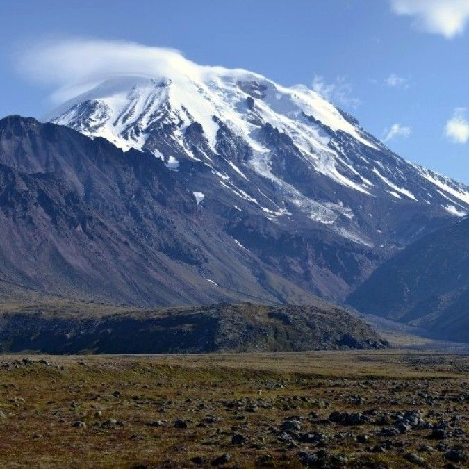

В данном разделе находятся все вулканы этой страны на нашем сайте.
Вулкан Ичинская сопка

Огромное пространство Срединного хребта на полуострове Камчатка занято большим количеством вулканов.
Но самым заметным является Ичинский вулкан или Ичинская сопка. Он возвышается над всеми вулканами и
является своего рода украшением Срединного хребта, занимающего самую большую площадь в 560 кв. км,
объем изверженного им материала составляет 450 куб. км.
Это действующий стратовулкан, расположен он в верховьях рек Ича, Быстрая Хайрюзовская, Морошка. Если
сравнивать его с камчатскими вулканами, то он уступает лишь вулкану Ключевская сопка. Вулкан Ичинская
сопка практически считается самым крупным центром современного оледенения Камчатки. Его ледниковая
вершина-конус покрыта мощным слоем льда, которая бывает часто покрыта облаками. Она поднимается над
прилегающими хребтами на 2,5 км и хорошо видна и с побережья Охотского моря, где расположены рыбацкие
поселки и с огромных просторов самого моря. Так что, поистине заоблачная высота!
Что касается строения вулкана, то он представляет собой крупное сложное вулканическое сооружение – тип
Сомм-Везувий, у которого как бы двуглавая вершина высотой 3621 м. Когда-то в древности здесь был
щитовидный вулкан, но образовалась кальдера, где вырос современный конус. Но со временем не стало верхней
части конуса, а вершина состоит как бы из трех куполов. Один из куполов – заполненный льдом кратер. На
высоте 2950 м северо-восточного склона, ледник имеет протаявшую воронку, откуда выделяются газы и пары.
Это единственный признак проявления вулканической жизни. Но как отмечают местные жители, ранее выделение
газов и паров было намного интенсивнее.
Также восточная, западная и северная стороны имеют широкое полукольцо соммы из сложенных дацитов и
андезитов. Ширина сомы составляет 5-7 км, протяженность – 25 км. В ее центре расположены два слившихся
лавовых конуса разного возраста, склоны которых покрывает слой льда и фирна. Конусы окружены экструзивными
куполами из сложенных дацитовых пород, где выделены несколько десятков небольших и девять крупных.
Особенно интересен купол Гигилен. Это главный купол, который находится на северо-восточной стороне у
подножия вулкана. У купола три вершины, которые покрыты многолетней слежавшейся снежной шапкой, с
которой спускаются ледники. Всего Ичинская сопка насчитывает 16 крупных ледников, которые расколоты
трещинами.
Что касается возраста вулкана, то считалось, что он начал формироваться в древнечетвертичное время. Но
на основании проводившихся исследований установлено, что вулкан начал формироваться в конце
верхнечетвертичного времени. В голоценовое время произошла основная масса излияний. В историческое время
происходили уже отдельные излияния потоков лавы. Последнее извержение происходило в 1740 году.
Углубимся в историю. Сколько же раз окружающая вулкан территория сотрясалась и озарялась пламенем!
Сложно, конечно представить силу бушующей здесь когда-то стихии, которая способствовала созданию такой
вулканической постройки.
Итак, вулкан, создававшийся многие тысячелетия, теперь, конечно же, практически разрушен, и высота
отдельных скалистых выступов достигает 3 км. Все это служит для хорошего изучения его постройки, а
изученные материалы помогают расшифровывать строение других вулканических образований.
Вулкан Менделеева — действующий вулкан в южной части острова Кунашир Большой Курильской гряды. Назван в
честь выдающегося русского химика Д. И. Менделеева в 1946 году. Сложный стратовулкан с центральным
экструзивным куполом. Высота 886 м (по другим данным — 888 м). Конус вулкана окружен обширной кальдерой
и сформирован андезитовыми и андезито-базальтовыми лавами. Основной состав лав — кварцевый
оливинсодержащий дацит. Внутреннее строение вулкана Менделеева представляет собой систему поверхностных и
глубинных магматических очагов. Основной периферический очаг диаметром около 2 км располагается
непосредственно под вулканом на глубине 4,5 км, глубинный магматический очаг находится на глубинах
30—60 км. Парогазовые выбросы и усиление фумарольной активности в 1880, 1901, 1946, 1977 гг.
На склонах вулкана располагается много фумарол и горячих источников, поверхность склонов покрыта
хвойно-широколиственными лесами с густым подлеском из курильского бамбука и кедрового стланика. У
подножия обустроено место отдыха «Горячий пляж», в настоящее время находящееся на территории погранчасти,
доступ к которой в значительной степени ограничен, где вода из вулканических источников используется в
качестве естественных лечебных ванн. Вулкан Менделеева относится к особо охраняемым природным территориям
(ООПТ) и является комплексным региональным памятником природы общей площадью 30 000 га (III категория по
классификации МСОП). Статус государственного памятника природы был присвоен ему в 1983 году.
В феврале—апреле 1977 года под вулканом произошёл рой землетрясений (более 200 толчков) с глубиной очага
более 20 км, причиной которых называют факт проведения буровых работ на геотермальном месторождении
«Горячий пляж». Также не исключается, что землетрясения могли быть связаны с активизацией магматического
очага вулкана.
В апреле—июне 1987 года зафиксирован очередной рой землетрясений (около 80 толчков) предположительно
вулканического характера, а в мае 1987 г. на Северо-восточном сольфатарном поле произошёл небольшой
парогазовый выброс.
В 1990 году на Северо-западном поле было зафиксировано последующее усиление активности, что выразилось в
плавлении серы на сольфатарах, повышении температуры на 2° в термальных источниках, а также появлении
нового термального выхода. Летом 2000 года на вулкане Менделеева отмечен рой землетрясений с глубиной
очага менее 20 км.
Обследование вулкана в период с 2000 по 2003 год показало общее снижение активности газовых струй
сольфатарных полей и термальных выходов. Так, на Северо-западном поле в сольфатаре «Ревущая» максимальная
температура в августе 2000 года была зафиксирована на уровне 109,6°, в сентябре 2001 года — 106,3°, а в
сентябре 2002 года — 101,0 °C. На Северо-восточном поле температура в термальных источниках за этот
период не превышала 100 °C. Исследования также свидетельствуют о стабильном температурном режиме
термальных выходов в долине ручья Кислый и о снижении температуры Нижнедокторских термальных источников
на 0,5—2° в сравнении с 1999 годом.
Результаты геологического изучения вулкана и проведённые наблюдения указывают на то, что существенное
изменение активности вулкана в ближайшем будущем является маловероятным, однако полностью не исключают
нового цикла активизации вулкана с извержениями различной силы, который может быть инициирован
поступлением магмы из глубинного очага. Разгрузка энергии магматического очага будет продолжаться за
счёт выделения термальных растворов и парогазовых струй на действующих сольфатарных площадках. Также
возможны повторные наблюдения излияний серных потоков, фреатических (разрывы магматического материала
из-за перепада температур) и гидротермальных взрывов. Зоны вулканической опасности от подобных проявлений
будут локализованы в пределах сольфатарных полей, долин ручьёв Кедровый, Кислый, Лечебный, Четверикова, и
не должны представлять серьёзной угрозы для расположенных рядом населённых пунктов.


 Вулкан Ичинская Сопка на Гугл карте
Вулкан Ичинская Сопка на Гугл карте